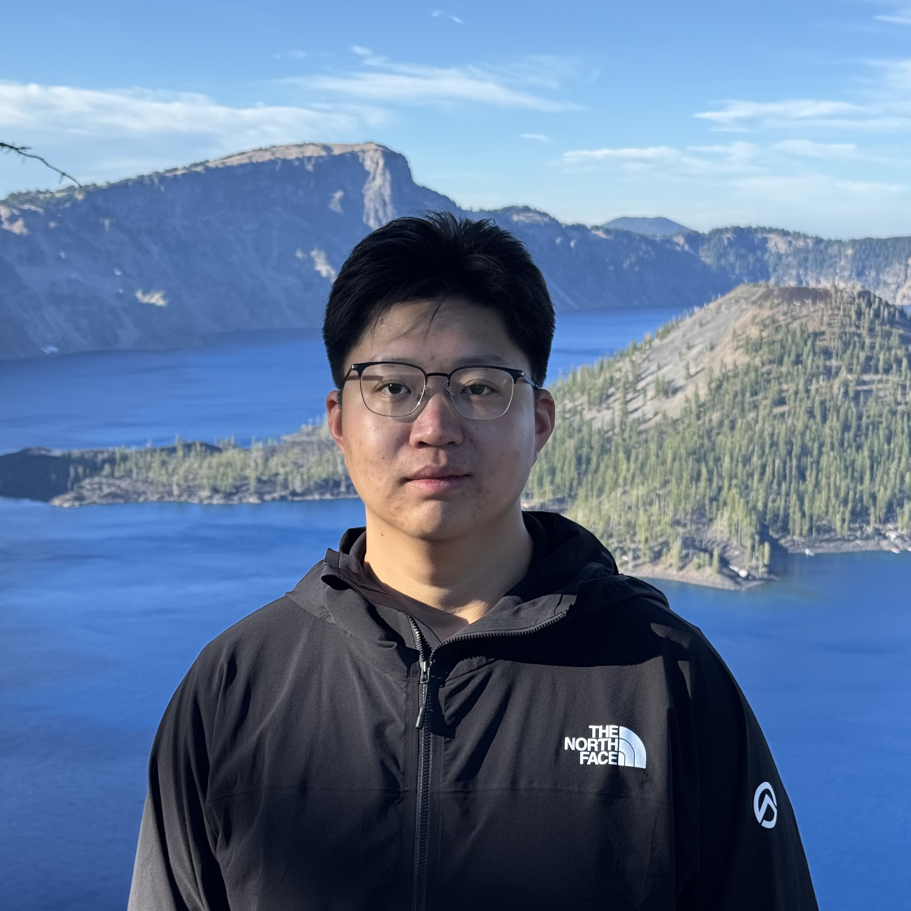

Xichen Pan 
Office: 60 5th Ave, New York, NY 10011 | 380 W 33rd St, New York, NY 10001
Work Email: xichenpan [at] nyu [dot] edu
Personal Email: xcpan [dot] mail [at] gmail [dot] com
I am a third-year Ph.D. student in Computer Science at NYU Courant, advised by Prof. Saining Xie. I am also a Visiting Researcher at Meta AI (AI Mentorship Program, 20% part-time) since 2024, based in the NYC Farley office. My research interests include developing more controllable generative models and vision-centric multimodal models. I previously interned at the Meta GenAI Emu team (Summer 2024, with Dr. Ji Hou), Microsoft Research Asia (2022–2023, with Dr. Li Dong), Alibaba Group (Fall 2022, with Dr. Pengda Qin), and Horizon Robotics (2021–2022, with Yichen Gong). Before my Ph.D., I obtained my bachelor’s degree in Computer Science from Shanghai Jiao Tong University (SJTU), where I was advised by Prof. Zhouhan Lin and received the Best Thesis Award.
News
[08/2024] Happy to be extended for another year at Meta AI!
[07/2024] I will join Meta AI New York office as a Visiting Researcher (2024-2025 AI Mentorship Program, 20% part-time) in 2024 Fall.
[02/2024] Our paper was accepted by CVPR 2024, check it out here. See you in Seattle!
[02/2024] I will join Meta GenAI as a Research Scientist Intern in 2024 Summer. See you in Menlo Park!
[01/2024] Our paper was accepted by ICLR 2024, check it out here.
[10/2023]  Our paper was accepted by WACV 2024 as Oral, check it out here.
Our paper was accepted by WACV 2024 as Oral, check it out here.
[09/2023]  Excited to start my CS Ph.D. at NYU Courant advised by Prof. Saining Xie.
Excited to start my CS Ph.D. at NYU Courant advised by Prof. Saining Xie.
[12/2022] Glad to work with Dr. Li Dong and Dr. Furu Wei at Microsoft Research Asia for the upcoming year, leading up to Fall 2023.
[06/2022] My bachelor thesis won Best Thesis Award in SJTU! Thanks my advisor Prof. Zhouhan Lin, checkout the honor roll.
[02/2022] Our paper was accepted by ACL 2022 Main Conference, check out full paper.
Publications & Manuscripts
* denotes equal contribution
Exploring MLLM-Diffusion Information Transfer with MetaCanvas
Han Lin, Xichen Pan, Ziqi Huang, Ji Hou, Jialiang Wang, Weifeng Chen, Zecheng He, Felix Juefei-Xu, Junzhe Sun, Zhipeng Fan, Ali Thabet, Mohit Bansal, Chu Wang
Preprint arXiv Project Page
BLIP3o-NEXT: Next Frontier of Native Image Generation
Jiuhai Chen, Le Xue, Zhiyang Xu, Xichen Pan, Shusheng Yang, Can Qin, An Yan, Honglu Zhou, Zeyuan Chen, Tianyi Zhou, Silvio Savarese, Caiming Xiong, Ran Xu
Preprint arXiv Project Page Code
BLIP3-o: A Family of Fully Open Unified Multimodal Models—Architecture, Training and Dataset
Jiuhai Chen*, Zhiyang Xu*, Xichen Pan*, Yushi Hu*, Can Qin, Tom Goldstein, Lifu Huang, Tianyi Zhou, Saining Xie, Silvio Savarese, Le Xue, Caiming Xiong, Ran Xu
Transfer between Modalities with MetaQueries
Xichen Pan, Satya Narayan Shukla, Aashu Singh, Zhuokai Zhao, Shlok Kumar Mishra, Jialiang Wang, Zhiyang Xu, Jiuhai Chen, Kunpeng Li, Felix Juefei-Xu, Ji Hou, Saining Xie
Preprint arXiv Project Page Code Data
Cambrian-1: A Fully Open, Vision-Centric Exploration of Multimodal LLMs
Shengbang Tong, Ellis Brown, Penghao Wu, Sanghyun Woo, Manoj Middepogu, Sai Charitha Akula, Jihan Yang, Shusheng Yang, Adithya Jairam Iyer, Xichen Pan, Ziteng Wang, Rob Fergus, Yann LeCun, Saining Xie
NeurIPS 2024 (Oral) arXiv Code Project Page
Image Sculpting: Precise Object Editing with 3D Geometry Control
Jiraphon Yenphraphai, Xichen Pan, Sainan Liu, Daniele Panozzo, Saining Xie
CVPR 2024 arXiv Code Project Page
Kosmos-G: Generating Images in Context with Multimodal Large Language Models
Xichen Pan, Li Dong, Shaohan Huang, Zhiliang Peng, Wenhu Chen, Furu Wei
ICLR 2024 arXiv Code Project Page
Synthesizing Coherent Story with Auto-Regressive Latent Diffusion Models
Xichen Pan, Pengda Qin, Yuhong Li, Hui Xue, Wenhu Chen
Exploring MLLM-Diffusion Information Transfer with MetaCanvas
Han Lin, Xichen Pan, Ziqi Huang, Ji Hou, Jialiang Wang, Weifeng Chen, Zecheng He, Felix Juefei-Xu, Junzhe Sun, Zhipeng Fan, Ali Thabet, Mohit Bansal, Chu Wang
Preprint arXiv Project Page
Think Then Embed: Generative Context Improves Multimodal Embedding
Xuanming Cui, Jianpeng Cheng, Hongyou Chen, Satya Narayan Shukla, Abhijeet Awasthi, Xichen Pan, Chaitanya Ahuja, Shlok Kumar Mishra, Qi Guo, Ser-Nam Lim, Aashu Singh, Xiangjun Fan
Preprint arXiv
BLIP3o-NEXT: Next Frontier of Native Image Generation
Jiuhai Chen, Le Xue, Zhiyang Xu, Xichen Pan, Shusheng Yang, Can Qin, An Yan, Honglu Zhou, Zeyuan Chen, Tianyi Zhou, Silvio Savarese, Caiming Xiong, Ran Xu
Preprint arXiv Project Page Code
BLIP3-o: A Family of Fully Open Unified Multimodal Models—Architecture, Training and Dataset
Jiuhai Chen*, Zhiyang Xu*, Xichen Pan*, Yushi Hu*, Can Qin, Tom Goldstein, Lifu Huang, Tianyi Zhou, Saining Xie, Silvio Savarese, Le Xue, Caiming Xiong, Ran Xu
Transfer between Modalities with MetaQueries
Xichen Pan, Satya Narayan Shukla, Aashu Singh, Zhuokai Zhao, Shlok Kumar Mishra, Jialiang Wang, Zhiyang Xu, Jiuhai Chen, Kunpeng Li, Felix Juefei-Xu, Ji Hou, Saining Xie
Preprint arXiv Project Page Code Data
Pisces: An Auto-regressive Foundation Model for Image Understanding and Generation
Zhiyang Xu, Jiuhai Chen, Zhaojiang Lin, Xichen Pan, Lifu Huang, Tianyi Zhou, Madian Khabsa, Qifan Wang, Di Jin, Michihiro Yasunaga, Lili Yu, Xi Victoria Lin, Shaoliang Nie
Preprint arXiv
Exploring the Deep Fusion of Large Language Models and Diffusion Transformers for Text-to-Image Synthesis
Bingda Tang, Boyang Zheng, Xichen Pan, Sayak Paul, Saining Xie
CVPR 2025 arXiv Project Page
PISA Experiments: Exploring Physics Post-Training for Video Diffusion Models by Watching Stuff Drop
Chenyu Li, Oscar Michel, Xichen Pan, Sainan Liu, Mike Roberts, Saining Xie
ICML 2025 arXiv Code Project Page
Cambrian-1: A Fully Open, Vision-Centric Exploration of Multimodal LLMs
Shengbang Tong, Ellis Brown, Penghao Wu, Sanghyun Woo, Manoj Middepogu, Sai Charitha Akula, Jihan Yang, Shusheng Yang, Adithya Jairam Iyer, Xichen Pan, Ziteng Wang, Rob Fergus, Yann LeCun, Saining Xie
NeurIPS 2024 (Oral) arXiv Code Project Page
Image Sculpting: Precise Object Editing with 3D Geometry Control
Jiraphon Yenphraphai, Xichen Pan, Sainan Liu, Daniele Panozzo, Saining Xie
CVPR 2024 arXiv Code Project Page
Kosmos-G: Generating Images in Context with Multimodal Large Language Models
Xichen Pan, Li Dong, Shaohan Huang, Zhiliang Peng, Wenhu Chen, Furu Wei
ICLR 2024 arXiv Code Project Page
Synthesizing Coherent Story with Auto-Regressive Latent Diffusion Models
Xichen Pan, Pengda Qin, Yuhong Li, Hui Xue, Wenhu Chen
Multimodal Audio-Visual Speech Recognition System Based On Pre-trained Models
Xichen Pan
Bachelor thesis at Shanghai Jiao Tong University (Best Thesis Award, 1st/150) News Honor Roll
Leveraging Unimodal Self-Supervised Learning for Multimodal Audio-visual Speech Recognition
Xichen Pan, Peiyu Chen, Yichen Gong, Helong Zhou, Xinbing Wang, Zhouhan Lin
Education
New York University Courant Institute
Sept. 2023 -- Present
Ph.D. Student in Computer Science, advised by Prof. Saining Xie
Shanghai Jiao Tong University
Sept. 2018 -- June 2022
B.Eng. in Computer Science (Outstanding Graduate of Class 2022), advised by Prof. Zhouhan Lin
Experience
Meta AI
Sept. 2024 -– Present
Visiting Researcher (AI Mentorship Program, 20% part-time)
Meta GenAI
May. 2024 –- Sept. 2024
Research Scientist Intern
Microsoft Research Asia
Dec. 2022 –- Sept. 2023
Research Intern
Alibaba Group
Sept. 2022 –- Dec. 2022
Research Intern
Horizon Robotics
Apr. 2021 –- July 2022
Research Intern
John Hopcroft Center for Computer Science, Shanghai Jiao Tong University
Apr. 2021 –- June 2022
Research Intern
Talks
Transfer between Modalities with MetaQueries
Invited Talk @ Adobe / Runway / SEED / OPPO / UCSD SDLab
Academic Service
CVPR'25/26, ICCV'25, ECCV'24, ICLR'25, NeurIPS'25, ICML'24/25/26, ACL'24, TMLR
Fun Projects

An open-source GitHub page built for reference in selecting CS programs in north America. The page is powered by Material for MkDocs and supports collaboration through Pull Requests and GitHub Actions.
Some of My Friends
Cornell: Youming Deng, Gene Chou, Yiming Dou
CMU: Kexun Zhang
Georgia Tech: Haotian Xue
NYU: List of My Labmates, Hexu Zhao
OSU: Kai Zhang
Oxford: Junlin Han
Stanford: Yanjie Ze
UC Berkeley: Junyi Zhang, Yichuan Wang
UW: Zihan Li
USC: Di Chang